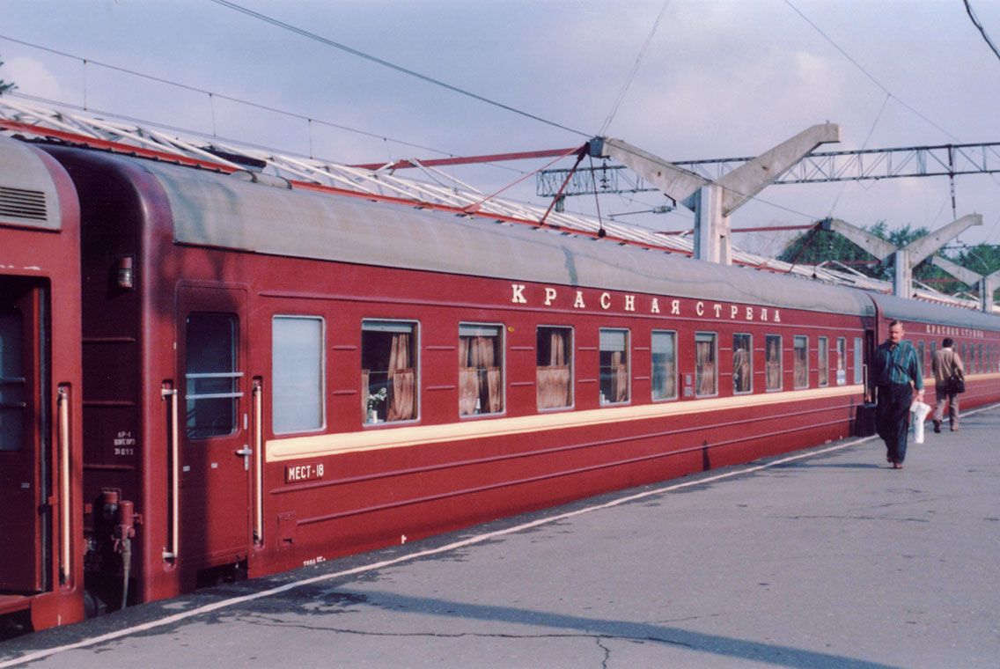
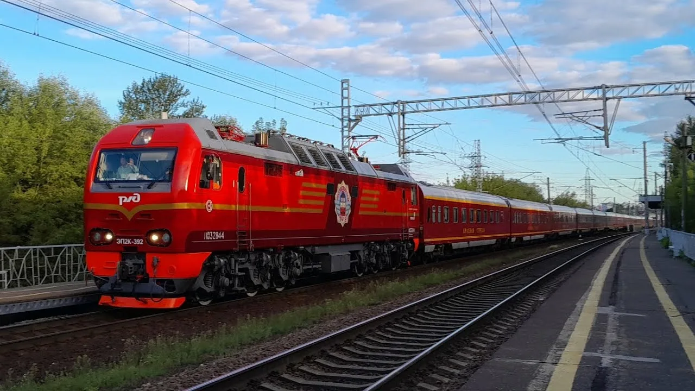
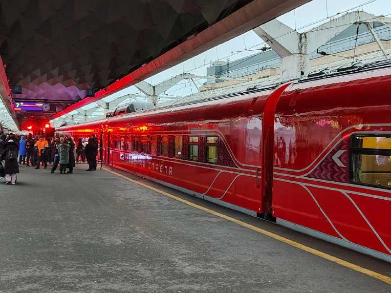
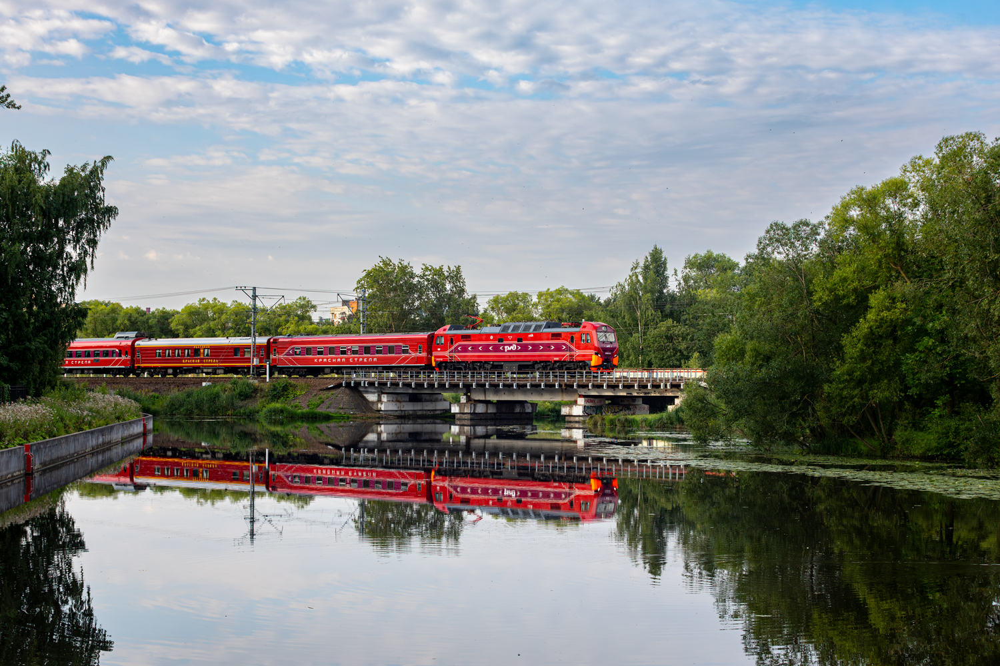

Легенда российских железных дорог
Фирменный скорый поезд № 1/2 сообщением Москва — Санкт-Петербург. Первый фирменный поезд в истории России, символ железнодорожного сообщения между двумя столицами.
Историческая справка
Первый рейс
10 июня 1931 года "Красная стрела" отправилась в свой первый рейс из Ленинграда в Москву.
Статус фирменного
Поезду официально присвоен статус фирменного — первого в СССР.
Обновление состава
Кардинальное обновление подвижного состава, новые вагоны повышенной комфортности.
Вагоны нового поколения
Переход на вагоны нового поколения с улучшенным сервисом и дизайном.
Современный облик
Поезд продолжает курсировать, сохраняя традиции и внедряя современные технологии.
Новые локомотивы ЭП2К-510/511
За поездом закреплены новейшие электровозы ЭП2К-510 и ЭП2К-511, поступившие в депо Санкт-Петербург-Пассажирский-Московский.
Интересный факт: "Красная стрела" — единственный поезд, который продолжал ходить в годы Великой Отечественной войны, связывая блокадный Ленинград с Москвой.
Маршрут и график
Москва (Ленинградский вокзал) — Санкт-Петербург (Московский вокзал)
| Отправление | Прибытие | Время в пути | Направление |
|---|---|---|---|
| 23:55 | 08:00 | 8 часов 5 минут | Москва → Санкт-Петербург |
| 23:55 | 08:00 | 8 часов 5 минут | Санкт-Петербург → Москва |
Нумерация поездов
№ 1 — Москва → Санкт-Петербург
№ 2 — Санкт-Петербург → Москва
Вокзалы
Москва: Ленинградский вокзал
Санкт-Петербург: Московский вокзал
Фирменный локомотив
С декабря 2025 года за фирменным поездом «Красная стрела» (поезд № 2, Москва — Санкт-Петербург) закреплены новейшие пассажирские электровозы ЭП2К-510 и ЭП2К-511.
⚡ ЭП2К-510
- Сетевой №: 11022142
- Построен: 09.12.2025
- Поступил с завода: 12.12.2025
- Депо: ТЧЭ-8 Санкт-Петербург-Пассажирский-Московский
- Завод: Коломенский завод
⚡ ЭП2К-511
- Сетевой №: 11022159
- Построен: 09.12.2025
- Поступил с завода: 12.12.2025
- Депо: ТЧЭ-8 Санкт-Петербург-Пассажирский-Московский
- Завод: Коломенский завод
Особенность: В составе поезда № 2 «Красная стрела» — один старый вагон «Красной стрелы», сохранивший исторический облик. Сочетание новейших локомотивов ЭП2К и исторического вагона делает этот поезд уникальным.
Эволюция облика Красной стрелы

📸 ???

📸 ???

📸 ???

📸 SaVvUsHkA
Нажмите на фото для увеличения
Особенности сервиса
🚆 Вагоны
СВ, купе, плацкарт нового поколения. Все вагоны оборудованы современными системами климат-контроля.
- СВ — двухместные купе
- Купе — четырехместные
- Плацкарт — открытого типа
🍽️ Питание
Ресторан-вагон с разнообразным меню, возможность заказа питания в купе.
- Завтраки в стоимость билета
- Горячее питание
- Напитки и десерты
📶 Услуги
Современный сервис для комфортного путешествия.
- Wi-Fi в вагонах
- Розетки и USB
- Индивидуальное ТВ
- Гигиенические наборы
Традиция: Перед отправлением из Москвы на перроне Ленинградского вокзала звучит гимн Москвы, а при отправлении из Санкт-Петербурга — гимн города на Неве.
"Красная стрела" — это не просто поезд, это символ связи двух столиц, легенда, которая продолжает свою историю уже почти век. Каждый рейс — это сохранение традиций и внедрение новых стандартов комфорта."